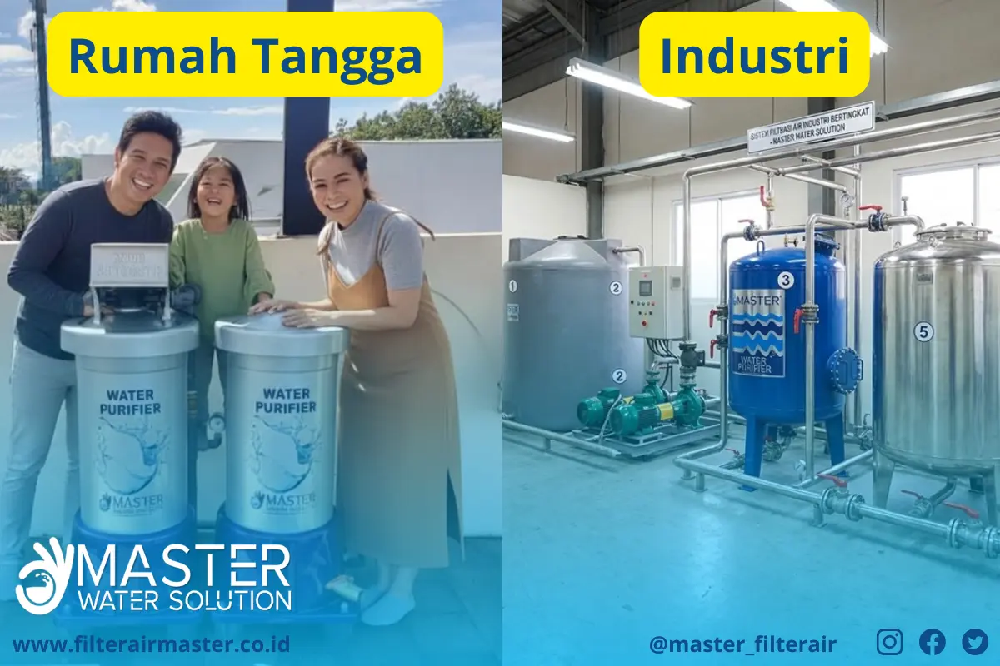

Panduan Lengkap Memilih dan Menggunakan Filter Air untuk Rumah dan Industri di Tahun 2025
Filter air sudah menjadi kebutuhan utama bagi banyak rumah tangga dan industri di seluruh Indonesia, terutama di tahun 2025 ini di mana kualitas air bersih semakin menjadi perhatian utama. Air yang terkontaminasi dapat menyebabkan berbagai masalah kesehatan dan kerusakan peralatan, oleh karena itu memilih sistem filter air yang tepat sangatlah penting.
Kenapa Memilih Filter Air itu Penting?
Air yang digunakan tanpa proses penyaringan yang tepat bisa mengandung berbagai zat berbahaya seperti partikel padat, klorin, logam berat, mikroorganisme, hingga bau dan rasa tidak sedap. Filter air membantu menyingkirkan kontaminan tersebut agar air yang keluar menjadi bersih, sehat, dan layak konsumsi maupun digunakan untuk kebutuhan industri.
Selain untuk kesehatan, filter air juga berperan penting dalam menjaga keawetan peralatan dan mesin yang menggunakan air. Kotoran dan mineral yang tidak disaring dapat menyebabkan kerak dan korosi, sehingga umur pakai alat menjadi lebih pendek dan perawatan jadi lebih mahal.
Jenis-jenis Filter Air yang Perlu Anda Ketahui
Di tahun 2025 ini, teknologi filter air sudah semakin beragam dan canggih. Berikut beberapa jenis filter yang umum digunakan baik untuk rumah maupun industri:
- Filter Pasir (Sand Filter): Media pasir silika digunakan untuk menyaring partikel kasar dan kekeruhan air. Cocok untuk prafilter pada air sumur dan sumber air keruh.
- Filter Karbon Aktif: Sangat efektif untuk menghilangkan bau, rasa tidak sedap, serta kandungan klorin dan bahan kimia organik berbahaya.
- Filter Reverse Osmosis (RO): Teknologi membran yang mampu menyaring partikel hingga ukuran molekul, sangat cocok untuk menghasilkan air minum berkualitas tinggi.
- Filter UV: Menggunakan sinar ultraviolet untuk membunuh bakteri dan virus tanpa bahan kimia, memastikan air steril dan aman dari mikroorganisme.
- Filter Media Khusus: Seperti zeolit, mangan greensand, dan resin untuk penanganan masalah khusus seperti zat besi, ammonium, dan lain-lain.
Dokumentasi Pemasangan
Bagaimana Cara Memilih Filter Air yang Tepat?
Memilih filter air yang tepat bergantung pada beberapa faktor utama berikut:
- Kualitas dan Sumber Air: Apakah air berasal dari PDAM, sumur, sungai, atau sumber lain? Ini menentukan jenis kontaminan yang perlu disaring.
- Kebutuhan Penggunaan: Untuk konsumsi langsung, keperluan rumah tangga, atau industri dengan standar kualitas tinggi?
- Volume dan Kapasitas: Berapa banyak air yang harus disaring per hari?
- Biaya dan Perawatan: Sesuaikan budget dengan biaya instalasi dan perawatan filter agar berkelanjutan.
Untuk rumah tangga, kombinasi filter pasir dan karbon aktif sering sudah cukup. Namun untuk kebutuhan industri, biasanya dibutuhkan sistem filtrasi berlapis dengan tambahan RO dan UV untuk menjamin kualitas air.
Memilih filter air yang tepat harus disesuaikan dengan lokasi. Contohnya, di Jakarta Selatan, air sumur sering mengandung zat besi tinggi. Panduan ini membantu Anda memilih sistem filtrasi yang sesuai dengan kebutuhan dan kondisi sumber air rumah Anda.
Studi Kasus Penerapan Filter Air Master M300 di Lingkungan Industri
Salah satu contoh sukses adalah penerapan filter air Master M300 di sebuah pabrik di kawasan Cibitung. Filter ini menggunakan kombinasi media pasir silika dan karbon aktif yang mampu menurunkan kadar kekeruhan dan bau pada air yang digunakan dalam proses produksi. Hasilnya, kualitas air meningkat signifikan sehingga mesin bekerja lebih efisien dan perawatan menjadi lebih mudah serta murah.
Dengan sistem filter yang tepat, pabrik tersebut juga berhasil mengurangi limbah cair yang berbahaya ke lingkungan sehingga memenuhi regulasi pemerintah terkait pengolahan air limbah industri.
Tips Merawat Filter Air agar Tetap Optimal dan Awet
Filter air yang terawat dengan baik akan memberikan performa maksimal dan umur pakai lebih lama. Berikut beberapa tips perawatan yang bisa Anda lakukan:
- Lakukan backwash secara rutin pada filter pasir untuk membersihkan kotoran yang terperangkap.
- Ganti media karbon aktif sesuai rekomendasi, biasanya setiap 12-18 bulan, tergantung kualitas air dan volume pemakaian.
- Periksa dan bersihkan membran RO secara berkala untuk menghindari penyumbatan dan penurunan kinerja.
- Pastikan instalasi dan valve dalam kondisi baik tanpa kebocoran.
- Gunakan jasa servis profesional untuk pemeriksaan berkala dan perbaikan.
Manfaat Menggunakan Filter Air Berkualitas untuk Rumah dan Industri
Berikut adalah beberapa manfaat utama penggunaan filter air berkualitas:
- Air Bersih dan Sehat: Mengurangi risiko penyakit akibat air terkontaminasi.
- Perlindungan Peralatan: Mengurangi kerak dan korosi sehingga peralatan tahan lama.
- Efisiensi Produksi: Air berkualitas membantu proses industri berjalan lancar tanpa gangguan.
- Ramah Lingkungan: Sistem filter yang baik membantu mengurangi limbah berbahaya ke lingkungan.
- Kenyamanan dan Kepuasan: Penggunaan air berkualitas meningkatkan kualitas hidup dan kepuasan pelanggan atau penghuni rumah.
Kenapa Memilih Filter Air Master?
Filter Air Master hadir sebagai solusi lengkap untuk kebutuhan filter air rumah tangga dan industri dengan teknologi terbaru, layanan pemasangan profesional, dan dukungan purna jual yang handal. Produk kami sudah terbukti kualitas dan ketahanannya dalam berbagai aplikasi.
Anda bisa menghubungi kami melalui halaman Kontak Kami untuk konsultasi gratis dan penawaran khusus.